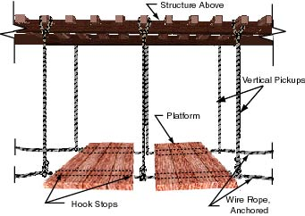

A catenary scaffold is a scaffold consisting of a platform supported by two essentially horizontal and parallel
ropes attached to structural members of a building or other structure.

Specific Requirements
-
Catenary scaffolds may not have
- More than one platform between consecutive
.
- More than two platforms altogether.
- Platforms supported by wire rope must have hook-shaped stops on each of the platform to prevent them from slipping off the wire ropes. These hooks must be positioned so that they prevent the platform from falling if one of the horizontal wire ropes breaks.
- Wire ropes must not be over-tightened to the point that a scaffold load will overstress them.
- Wire ropes must be continuous and without splices between anchors.
- Each employee on a catenary scaffold must be protected by a personal fall-arrest system.